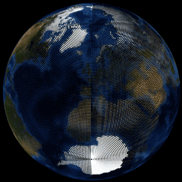

Visualisation de données
07. Introduction à la cartographie
Noemi Romano
noemi.romano@heig-vd.ch
Semaine passée
Interaction .zoom(), .brush()
Animation .transition(), .join(enter, update, exit), setInterval, clearInterval
Un peu d'histoire
Çatalhöyük Map, 6200 avant J. C. (Source: Cartography blog)

Reconstruction of Anaximander’s Map (Source: Digital Maps of the Ancient World)

Ptolemy map of the World, II siècle après J. C. (Source: Wikipedia)

Tabula Rogeriana, Muhammad al-Idrisi, 1153 (Source: Wikipedia)
Mercator Map (Source: Wikipedia)
L'épidémie choléra de Broad Street, John Snow, 1854
How the virus got out, New York Times
Processus
Types de carte
Cartes de référence
Google maps, Openstreetmap, Maps.me
Cartes thématiques
Qualitative
Les cantons (Source: Bonjour Genève)
Cartes thématiques
Choroplète

Votations fédérales 2022 (Source: RTS)
Cartogrammes
Vraies et fausses évidences de la géographie électorale suisse, Manouk Borzakian
Flowmap
Migration en Suisse 2016, flowmap.blue
Cartes de chaleur
CARTO Heat Maps
Cartes topographiques
Images relief, Reddit
Cartes topologiques
Transports Public Lausannois
Design
Projection
Pourquoi les cartes du monde sont fausses
Listes de projection (d3)
Symbologie
Les variables visuelles, La Sémiologie graphique de Jacques Bertin, 1967
Exercice Gapminder
- Traitez vos données avant de pouvoir les dessiner (voir message sur Teams)
- Utilisez d'autres échelles que scaleLinear() (
.scaleSqrt(), .scalePow())
Projet
- Squelette de votre site
- Visualisations statiques
- Animation pour plus tard!